Principal Investigator
Professor Guida Landouré
Associate Professor
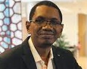 Professor. Guida Landouré is an Assistant Professor at the University of Science, Technique and Technology of Bamako, Mali where he did his medical training before joining the National Institutes of Health (NIH) visiting fellow from 2004 to 2007. He has a PhD from the University College London, London, UK and was trained in several topics including the principles of clinical research and pharmacology, the basics of epidemiology and ethics. Dr. Landouré is the head of the Laboratory Neurogenetics at the Faculty of Medicine and Dentistry of Bamako, Mali working on hereditary neurological disorders including peripheral neuropathies, ataxia, myopathy and spastic paraplegia. His work has led to the characterization of new clinical entities, and the discovery and characterization of the gene for several neurological diseases, a work published in high impact journals. He is also collaborating with other researchers on the genetics of non-syndromic hearing loss in the African population.
Clinical investigator
Professor Cheick O. Guinto
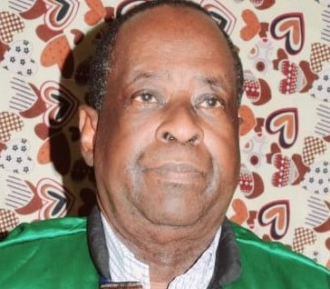 Prof Cheick Oumar Guinto, is a full Professor of neurology at the Faculty of Medicine and Dentistry of the University of Sciences Techniques and Technologies of Bamako, Mali. He is the head of the department of neurology of the teaching hospital of Point G and the responsible of the teaching of neurology at the Faculty of medicine and dentistry. Prof Guinto worked on several aspects of neurodegenerative disorders including dementia, Parkinson disease, spastic paraplegia. He is co-investigator on the project clinical and genetic studies of hereditary neurological disorders in Mali. He is a founder member of the Malian Society of Neurosciences, President of the Malian Society of Neurology, member of the Pan African Association of Neurological Sciences, Societies of Neuroscientists of Africa and member of the consortium Human Heredity and Health in Africa.
Professor Mahamadou Traoré
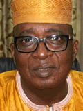 The goal of my research is to identify chromosomal abnormalities in children with polydysmorphic syndromes, and in infertile men. For many years these disorders have been neglected in the Malian population, probably because of the lack of knowledge about their cause and the limited taught genetic classes in medical schools. In defining the genetic basis of these disorders, I intend to increase public awareness about these disorders, and re-orient government interest toward funding research in this field. Because some neurological disorders are caused by chromosomal abnormalities, my current activities in Dr. Landoure’s project include performing karyotype and FISH analysis. In addition, my position as teacher at the University of Sciences, Techniques and Technology further qualifies me to work in the current project.
Professor Oumar Sammassékou
Associate Professor
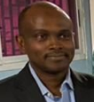 I am a trained geneticist and molecular oncologist. My research experience is mostly based on cancer. I had done most of my Ph.D on studying telomeres. First, we established a linked between some chromosomal abnormalities and individual telomere lengths in chronic myelogenous leukemia (CML). Next, we demonstrated that the three dimensional nuclear architecture of Telomeres can be used to differentiate telomerase-positive cells to those using alternative lengthening.Finally, we showed that the mutation TP53-R175H of P53 protein is more likely to cause higher levels of genomic instability chromosomal instability and disruption of 3D nuclear architecture of telomeres than some other P53 mutants.I have been working with Dr Landoure team to extensively study neuro genetic disorders. Because of the previous grant, we have set up a genetic laboratory having two sectors: molecular genetic laboratory and cytogenetic laboratory. The purpose of these laboratories is to be able to carry out all of the future genetic testing in Mali for subsequent research studies. In those laboratories, we will developed some clinical tests to enhance Malian diagnostic platform. Moreover, these laboratories will serve as training sites for students and health care practitioners.
Professor Seybou Hassane DIALLO
Associate Professor
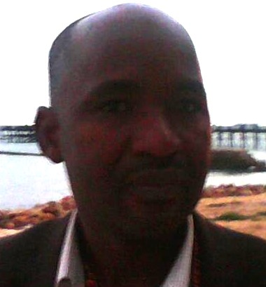 Dr. Seybou H Diallo, is an Assistant Professor at the Faculty of Medicine and Dentistry, Bamako, Mali and a senior neurologist at the teaching hospital Gabriel Touré of Bamako, Mali. Dr. Diallo hold a MD degree obtained from the Faculty of Medicine and Dentistry of Bamako. Dr. Diallo is a clinical investigator in the project clinical and genetics studies of hereditary neurological disorders in Mali and has authored several articles in peer reviewed journals. He is member of the Malian Society of Neurosciences, Malian Society of Neurology, African Society of Human genetics, Consortium Human Heredity and Health in Africa (H3Africa)
Professor Thomas Coulibaly
Associate Professor
For last few years I have been interested in the clinical research, and have collaborated with Dr. Landoure in their SMN copy number determination in Mali project.
Since I have been back, I have seen and collected families with hereditary neurological conditions that may well be investigated in the proposed project which is
“Clinical and genetic studies of hereditary neurological disorders in Mali”. In addition to my clinical experience, I have lot of experience doing electroneurophysiological
evaluations, including EEG and EMG, and I can bring this experience to help characterize the families. I believe that I am well qualified to participate in this project.
Dr Salimata Diallo
 Dr. Salimata Diallo, is a neurologist at the teaching hospital of Gabriel Touré, Bamako, Mali.
Dr Diallo hold a MD degree obtained from the Faculty of Medicine and Dentistry, Bamako, Mali.
She did her neurology residency at the University Cheick Anta Diop of Dakar, Senegal. She is a senior neurologist and a clinical investigator on the project clinical and
genetics studies of hereditary neurological disorders in Mali. She is member of the Malian Society of Neurosciences,
Malian Society of Neurology, African Society of Human Genetics, Human Heredity and Health in Africa (H3Africa).
Dr. Salimata Diallo, is a neurologist at the teaching hospital of Gabriel Touré, Bamako, Mali.
Dr Diallo hold a MD degree obtained from the Faculty of Medicine and Dentistry, Bamako, Mali.
She did her neurology residency at the University Cheick Anta Diop of Dakar, Senegal. She is a senior neurologist and a clinical investigator on the project clinical and
genetics studies of hereditary neurological disorders in Mali. She is member of the Malian Society of Neurosciences,
Malian Society of Neurology, African Society of Human Genetics, Human Heredity and Health in Africa (H3Africa).
Dr Lassana Cissé
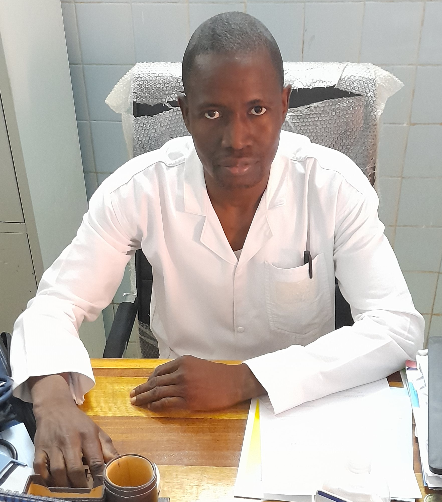 Dr. Lassana Cissé, is a junior neurologist and epileptologist at Regional Hopital nianankoro Fomba, Segou Mali.. Dr. Cissé hold a MD degree from the Faculty of Medicine and Dentistry of the University of Sciences, Techniques and Technologies of Bamako, Mali. Dr. Cissé is a clinical investigator in the project clinical and genetics studies of hereditary neurological disorders in Mali where he performs clinical and neurophysiological studies. He is member of several scientific societies including the Malian Society of Neurosciences, Malian Society of Neurology, African Society of Human genetics, Human Heredity and Health in Africa (H3Africa).
Fellows
Dr. Abdoulaye Yalcouyé,MD,PhD
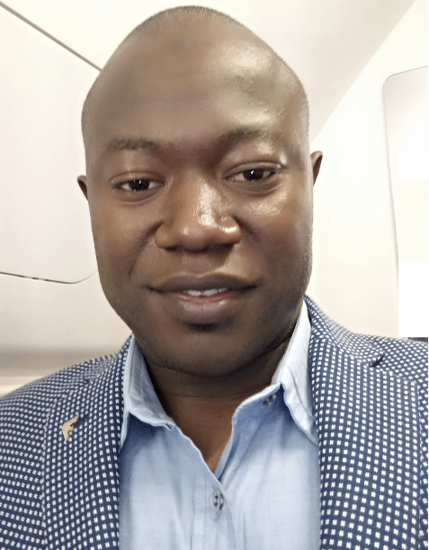 Dr Abdoulaye Yalcouyé obtained his MD degree in Neurology from the University of Sciences, Techniques and Technologies of Bamako, Mali and a PhD degree in Human Genetics from the University of Cape Town, South Africa. His research focuses on the genetic studies of inherited peripheral neuropathies and hearing impairment in the Malian population, which led to the discovery of several known and novel clinical and/or genetics entities. Findings of his work has been published or currently being published in international peer reviewed journals. Dr Yalcouyé’s works have been recognized with international awards (H3Africa 2017, HUGO 2020, ASHG 2021, AfSHG 2022). He is member of several international and national scientific societies including Peripheral Nervous System Society, African Society of Human Genetics, American Society of human genetics, Movement Disorders Journal, Malian Society of Neurosciences, Malian Society of Human genetics.
Dr. Salimata Diarra
Ph.D candidate
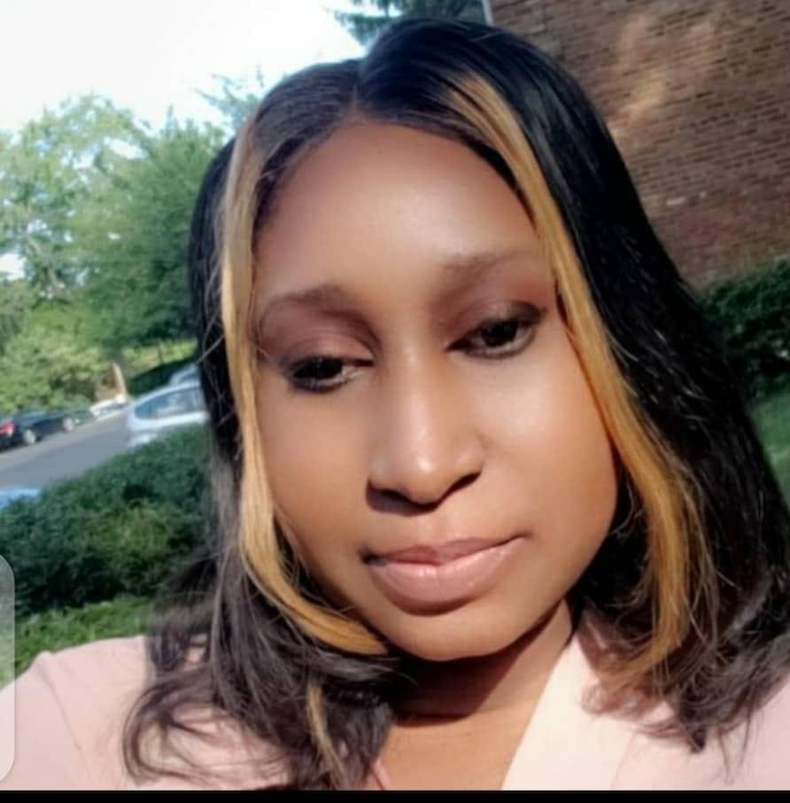 Dr. Diarra Salimata is a Malian female Clinical-Research Scientist in Guida Landouré's group (PI-H3Africa project’s) joined by her since in 2013. In 2016, she completed her MD degree from medical school at the University of Science, Technique and Technology of Bamako (USTTB), Mali where she did her medical training before starting training in Neuroscience as a resident at Faculty of Medicine and Dentistry of Bamako. She has a background in neurogenetics with general training in clinical neurology, next-generation sequencing analysis and cell culture study. Dr Diarra early research project investigated “Clinical and genetic spectrum of hereditary spastic paraplegia in Mali” as medical thesis at USTTB, Bamako, Mali and found novel variants but also several families with negative screening for all known clinically relevant genes. From 2018 to 2021 she awarded postdoc visiting-fellow position at Dr. Kenneth Fischbeck lab's, at the National Institute of Neurological Disorders and stroke (NINDS), Neurogenetics branch, National Institute of Health (NIH), U.S.A. Salimata’s worked on the functional characterization of putative new gene discovered in a Malian consanguineous family with early onset of complicated form of HSP features. In 2022 to date, she joined Khokha lab at Yale University School of Medicine as research scientist. Her project at Yale university is focus on animal model system as human neurodevelopment disease studies including Xenopus Tropicalis and Leavis (Frog). As a future physician-scientist, she hopes to lead a translational lab that develops innovative diagnostics, therapeutics and clinical protocols to serve the unmet needs of the patients living with rare and underserved diseases.
Dr. Cheick Abdel Kader CISSE
Neurology Resident | Ph.D candidate
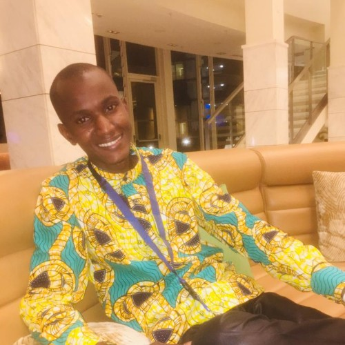 Dr. Cissé has been working on the clinical and genetic features of hereditary ataxias in Malian families since his internship in 2018. He is a final year resident in clinical neurology and research assistant in the laboratory of neurogenetics where he combines both clinics and laboratory works. He attended several workshops on Movement disorders, grant writing, leadership skills, time management and Bioinformatics in Cape Town, Abuja and online. His main goal is to improve the quality of care for ataxic patients, discover new genes related to ataxia and get involved in clinical trials and drugs discovery. Current position : Neurology Resident.
Dr. Oumou TRAORE
Neurology Resident
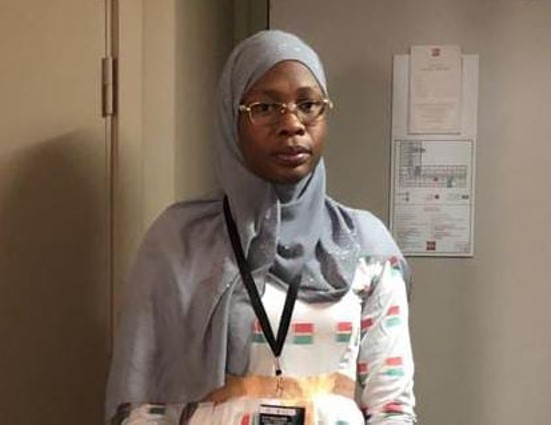 Dr. Traoré has been working on the clinical and genetic features of hereditary hearing loss in Malian families since his internship in 2018. She is a final year resident in clinical neurology and research assistant in the laboratory of neurogenetics where he combines both clinics and laboratory works.She attended several congress and workshop in Tunisia, Cape Town, Abuja, and Morocco. our main objective is to discover the genes linked to deafness in africa, more particularly in Mali.
Dr. Samuel Mefoung
Neurology Resident
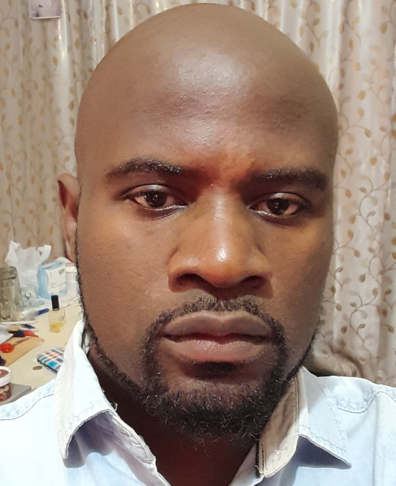 Dr Ephrata Samuel Mefoung Cameroonian, Medical Doctor, a student in specialization of Neurology, his is working on the clinic and genetics of familial epilepsies in the Neurology Service of the CHU Point G. He has participated in several workshops on Bioinformatics and obtained the H3ABioNet certification, and I plan to implement my training in Bioinformatics. He is currently working on the identification of genetic factors responsible for epileptic syndromes encountered in the Malian population.
Dr. Moussa Ali SANGARE
Neurology Resident
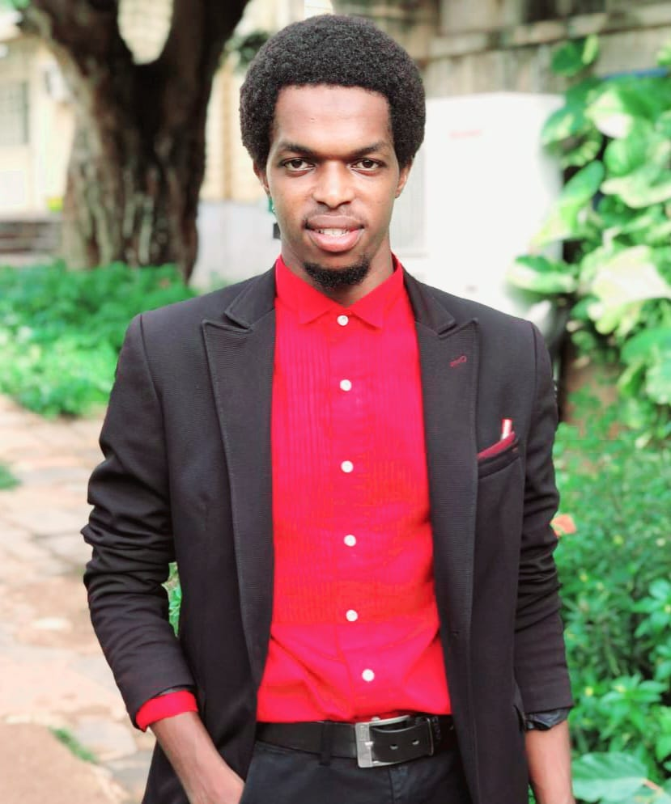 Dr. SANGARE has been working on the clinical and genetic features of hereditary of intellectual disability in Malian families since his internship in 2018 Moussa Sangare is a Medical Doctor. He graduated from the medical school of the University of Sciences Techniques and Technologies of Bamako, Mali (USTTB-Mali). He worked on deciphering the genetic basis of neurodevelopmental disorders (NDD) and particularly Intellectual Disability (ID) in the Malian population with the Neurogenetics Lab at Point G teaching hospital. He’s nowadays continuing in the same lab as a research assistant. His main ongoing professional roles are patients’ enrollment and follow-up, DNA extraction, NGS data analysis and interpretation. His work led to the identification of new pathogenetic variants and some ID candidate genes. He presented some of these results at international conferences, also in the pipelines to be published. Moussa is passionate about biomedical research and global health and open to networking. He values integrity, ethics, justice, honesty, teamwork, and excellence and is interested in computational biology, bioinformatics, and molecular biology. Current position : Assistant Research.
Dr. Aissata TOURE
Neurology Resident
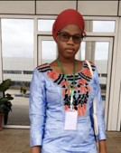 Dr. TOURE has been working on the clinical and genetic features of hereditary of spinal muscular atrophy in Malian families since his internship in 2020 Aïssata is a research fellow based at the Neurogenetics laboratory of the University of Science, Techniques and Technologies of Bamako. She has been working on the clinical and genetic aspects of spinal muscular atrophy in Malian population since her internship in 2020. She is in first year resident in clinical neurology at National Teaching Hospital of Point G. she attended several workshops on Movement disorders, Bioinformatics online. Her main goal is to improve the quality of care for patients with spinal muscular atrophy in Mali.
PhD Students
Salia Bamba
Ph.D student
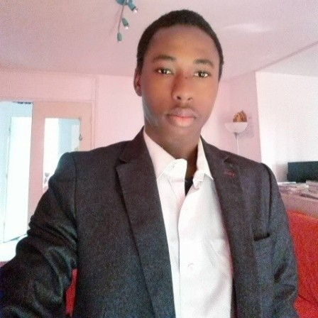 PhD student, working on Genetic of familial epilepsy in Malian population. M.Salia Bamba, currently, PhD candidate received his bachelor in Immunology Cellular and Molecular from the Nature and Life Sciences of the University of Constantine (Algeria) in 2013. In the same University, after two years he found his master’s degree in Immunology Oncology in 2015. In 2015, he came to the France for his second Master’s degree in Genetic of Pathologies that he obtained in 2017 at University of Rouen. His main skills have been in the development of methods and biomarkers for the improvement of the management of patient with rare and complex diseases by Immunology and Genetic approach. Currently, he is working on the NGS data to identify the gene candidate of neurological inheritance disease in Malian population by Bioinformatic pipeline. He is co-investigator of the project : Clinical and Genetic Studies of Hereditary Neurological Disorders in Mali.
Dr. Modibo K Goita,PharmD,MSc
Ph.D candidate
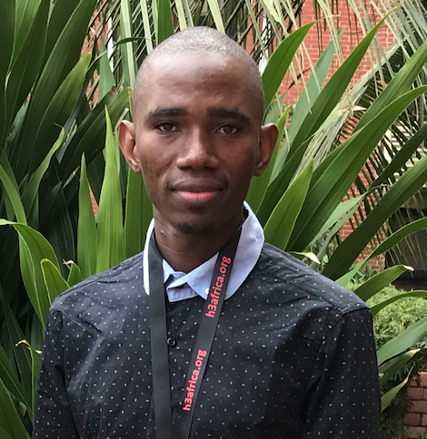 Dr. Modibo K Goita received his bachelor in Exact Sciences from the High School of Yorosso in 2013. He began his Pharmacist doctoral training at the Faculty of Pharmacy (FAPH) at the University of Sciences of Techniques and Technologies of Bamako (USTTB) in 2014. He was recruited in 2019 as an intern at the Laboratory of Neurogenetics of the same university with funding from Human Heredity and Health in Africa (H3Africa). His thesis work focused on the assessment of telomere length during myeloid chronic leukemia in Mali. He started a master degree training in Bioinformatics at the African Center of Excellence in Bioinformatics of Bamako (ACE-B) of the same university in 2020. Goita defended his MS thesis in 2022, focus on analysing breast cancer predisposition germline variants using whole exome sequencing data.
Alumni
Upload soon...


© 2023 copyright